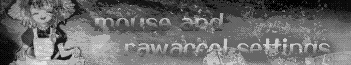

Home
/
Start page
/
HUDs
/
TF2 files and settings
/
Useful software
Config
Version of Comanglia Toaster config modified by me.
Download
Hitsound and Killsound
Play hitsound
Play killsound
Download
Mods
Flashy projectile trails
No domination sounds
No crit sound
No screams

Raw Accel settings
Download Raw Accel
Download + guide
Mouse settings
Polling rate: 1000 Hz
DPI: 1600
Windows sensitivity: 6 bars
Home
Start page
HUDs
TF2 files and settings
Useful software
We are all imaginary 2023